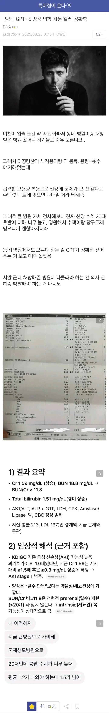
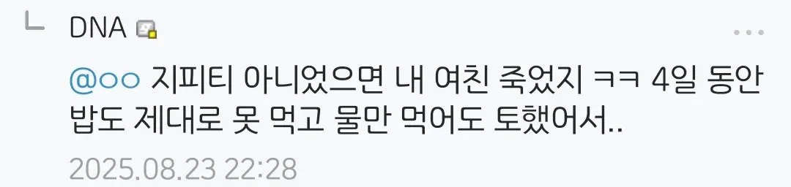

타바스코소스 넣음?
이거 ㄹㅇ임 나도 요로결석 첨에 허리디스크 터진줄알았다
나도 요로결석 걸렸을 때 디스크 터진 줄 앎
너 비타민C 오버도즈했냐
ㅇㅇ 허리아프고 구토하거나, 등쪽으로 콩팥쪽에 주먹으로 툭 쳤을 때 존나 아프면 요로결석임.
오줌마려운건요?
그건 요실금
요로결석이면 오히려 오줌 잘 안나옴 ㅋㅋ
나도 지피티가 요로결석 진단해줌 ㅋㅋㅋ
첫 병원에서 처방을 받았지만 뭔가 좀 이상한것 같다. 재방문을 했더니 모른다고 경미한 부작용일 수 있으니 괜찮다고 한다. 근데 아무리 봐도 증상이 개선되기는 커녕 좀 이상한거 같다면 다른 병원을 방문한다.
난 이게 당연한 프로세스 인 줄 알았는데 아닌 사람들이 꽤 많더라
요즘 동내 의사선생님들도 GPT 띄어놓고 일하시는 분들 많더라
"집에 돌아가면서 제미나이한테 무슨병인지 물어봐요" 이럼 ㅋㅋ
에헤이 제미나이는 안됩니다
이제는 진단 자체는 ai한테 맡기고 그 법적책임, 검수를 의사한테 맡기는 시대가 와야하지않을까
결과적으론 그렇게 갈것같음
사실 모든 AI대체 가능 직업이 이 방식으로 흘러가지 싶음
일단 기본 진단받은 동네병원에는 고소가능한거아님?
참고로 제미나이한텐 묻지마라
이 새끼 헛소리 존나 함 버전 업 되면 모르겠는데
지금 버전한텐 크게 기대하지마
대식이햄이 젤 좋다는 제미나이를 쓰지말라니
ㅇㄱ ㄹㅇ 제미나이는 큰일난다 ㅋㅋㅋ
ㄹㅇ 제미나이 쓰는데 답답해죽겟다
영문 교과서 pdf -> md로 변경하고 컨텍스트로 밀어 넣어서 자문하면 꽤나 똑똑함..ㅋㅋ
의학자문가지고가서 의사랑 다이다이까는건 당연히 지양해야되지만
Ai로 건강자문받고 원인추적하는건 ㄹㅇ 도움되긴함
학교에서도 젊은 선생님들은 ai 적극적으로 이용하시더라 그리고 실제로 효과가 있고
그리고 병원에서 약 처방 받을때 시스템으로 치명적인 충돌이 일어나는 약 조합은 알아서 걸러주는데, 치명적이진 않고 그냥저냥 효과가 떨어지게 만드는 조합은 못 걸러주더라. 재발을 예방해주는 약에 내성이 생겨서 복용을 중단하게 되었는데 나중에 알고보니 다른 과에서 처방해주는 약하고 간섭이 있어서 효과가 떨어진거였더라. 검색하고 나서야 알게됨
앞으로 역사에서 ai는 진짜 극초창기일 텐데 벌써 이 정도면 그냥 거의 모든 분야를 ai가 대체하게 될 것 같음
디시 특갤에 여친이라니 벌써부터 인공지능 할루시네이션 나오네
이제 암걸렸을때 한의원 가는거랑 사람 의사한테 진단받는게 똑같은 수준의 병신취급 받는 날이 올지도.
미용만 할꺼면 피부과나 의원 이딴거 간판 내리라해라, 규제를 이런곳에 때려야지
나도 지피티가 지루성 피부염 및 여드름이랬는데 의사가 대상포진이라길래 구라까네 하고 병원 나옴
그래서 진짜 병명은 뭐였음?
사실 제대로 진료받고 대상포진 약 받아 먹음
지피티한테 한번 내 증상 이야기하고 병원가서 어떤거 체크하면 되는지 조언받은 후 병원가서 그거대로 하면 되더라
가끔 의사는 그냥 넘어가는데 지피티는 확인해봐야고 말하는 거 있거든? 그런거 지피티없었으면 꿈에도 몰랐을 요소인데 지피티 덕분에 안놓칠수 있게된거 같음
이건 너무 억까 아닌가 ㅋㅋ
첫 병원 입장에서 "모른다"기보다 상태가 안좋아서 로컬에서 간단히 대처하기 어려워보이니까 큰병원 가라고 의뢰를 해준거 같은데 너무 편향적으로 글 쓴거 같은데
애초에 chatGPT고 뭐고 의대 갓 졸업한 대학생이 나와서 봐도 바로 알만한 lab 결과기도 하고
내용이 너무 과장된게 많은듯
또 다른 특슬람 서사가 여기에 있다
나도 디스크 터져서 다리 마비오는데 그냥 낫겟지했는데 반 병신될뻔한거 빨리 수술하라그래서 바로 병원가서 그날 응급수술함 ㅋㅋ
돌팔이가 많은건 팩트긴해서... 우리 가족도 당한게 있어서 병원은 무조건 여러군대 가봐야함
의사 약사 같은 전문직들이 대체될정도면 다른 일반 사무직들은 뭐해먹고 살아야하냐...
정밀도도 그렇고 몇십년전 의학 지식으로 진료보는 의사도 많아서... ai참고하는 의사가 많아졌으면 좋겠음
나도 아프거나 뭔가 이상할 때마다 물어보는데 잘 도와줌 증상 포인트 잡아서 정리해논거랑 평소 달랐던 특이사항같은거 넣어주면 더 잘나옴
동네의사가 뭘 알겠어 이제 gpt가 더 잘알듯
나는 골때리는게 의사한테 뭐 어쩌고 저쩌고 물어봤더니 이 씨발놈이 제미나이한테 물어보고 답주더라
" 이씨발놈아 나는 더 똑똑한 GPT PRO한테 물어보고 간거야 씨발년아 이럴꺼면 안왔지 " 라고 생각함.
클로드 이새끼는 병원가서 의사랑 얘기해보라고만 하던데. 니의견 말해보라고 닥달해야 답변 해줄까말까
동네 의사 의료 수준이 떨어지는건 차치하고 하루 동안 물만 먹어도 토할 정도면 바로 큰 병원으로 가보지 않나?
4일동안 동네 의사만 믿고 그 뒤에 챗지피티한테 물어본다고;;
의사도 오히려 편할듯 크로스체크 되서 ㅋㅋ 못믿어워하면 걍 gpt믿으라하고 돌려보내면 별 위험도 없을듯
이제 의학적 자문 ai한테 받는거 다들 하는거겠지만
나도 며칠전에 허리통증이 너무 오랫동안 지속돼서
서서일하고 스트레칭하고 운동하고
별짓 다하면서 몇시간 버티다가
서류 제출하러 구청가다가 차 유턴하고
침대에 잠시 누워있다가
이건 아무래도 뭔가 이상해서 지피티랑 얘기하다보니
요로결석이어서 바로 병원감
의심증세가 너무 명확해서 조영제도 없이
바로 신장 ct 슛 하고 요로결석 6.3mm 확정
더 오래 버텼으면 더 고통스러웠을듯